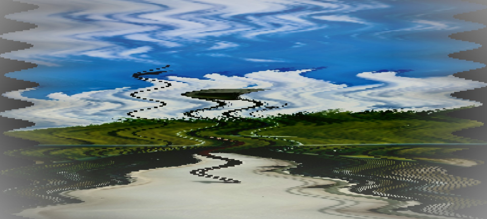

Process
Development and Iteration
Dream Archive developed through several stages of experimentation with image distortion and interaction design. Early versions of the project were created using p5.js to explore how a single image could shift and transform through movement and visual filtering. These experiments focused on creating instability within otherwise familiar landscape images.
Later versions introduced transitions between multiple images, allowing different memory fragments to blend into one another. This helped establish the idea of the archive as a space where memories overlap rather than remain separate.
The final version of the project moved into a multi-page website built with HTML, CSS, and JavaScript. This allowed each memory entry to function as its own environment while still remaining connected to the larger archive structure.
